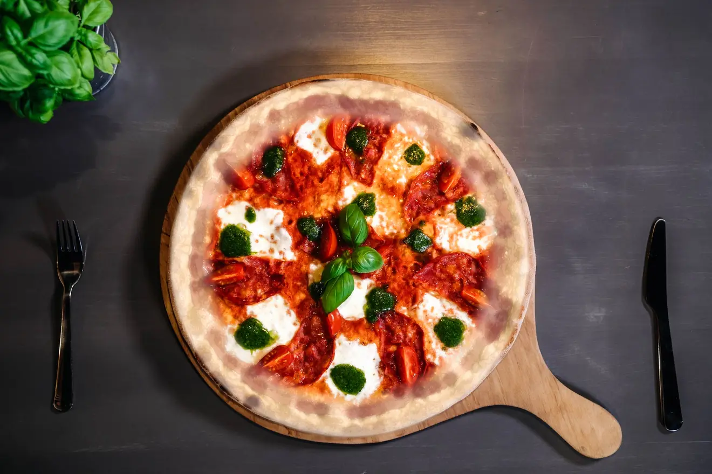
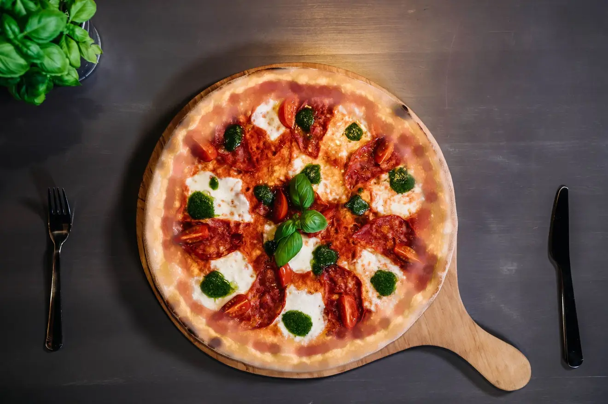
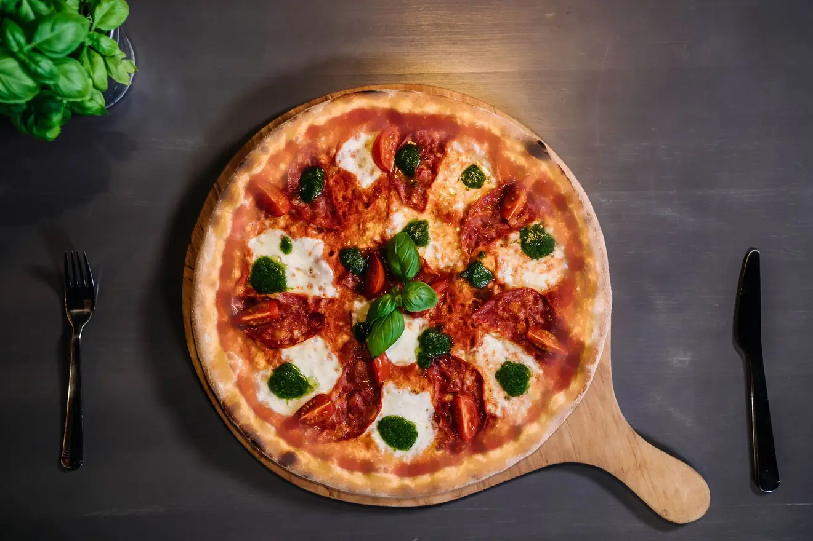
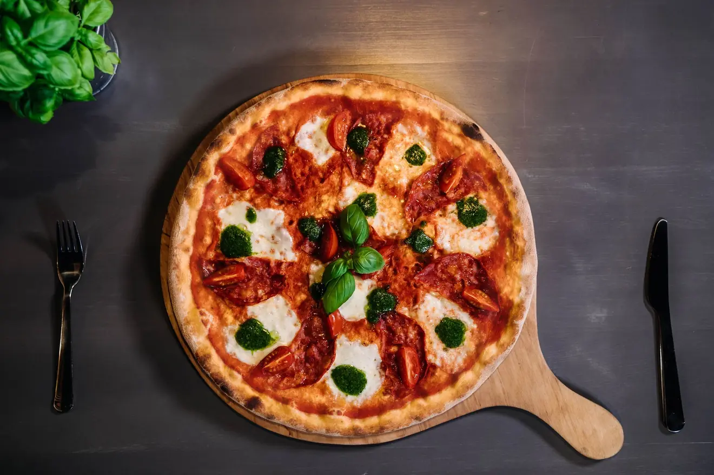
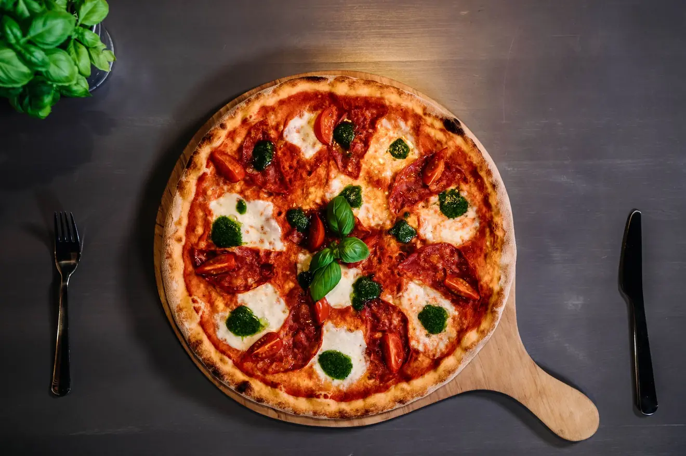
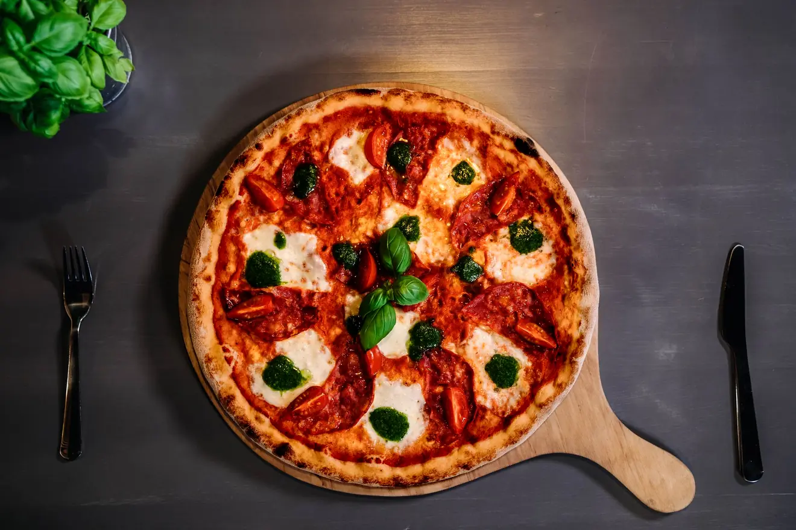
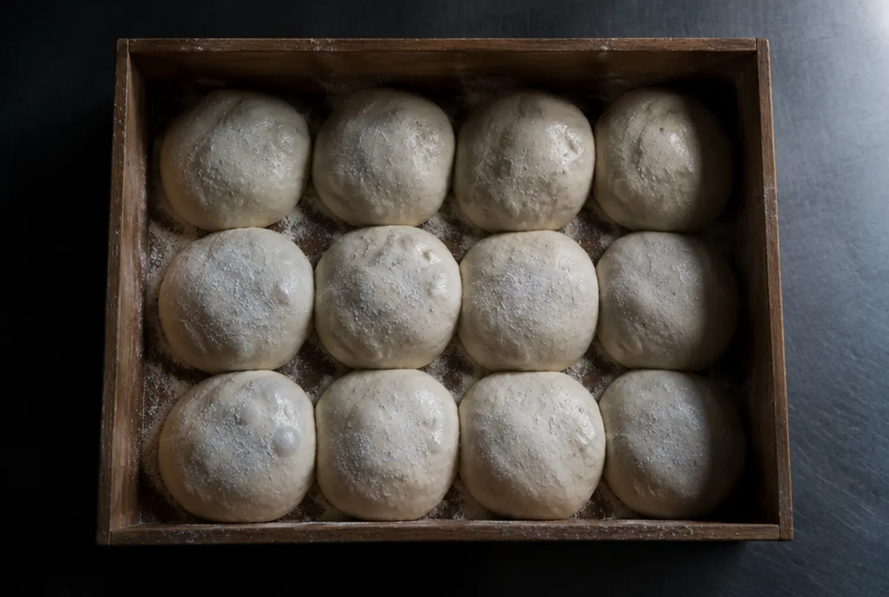
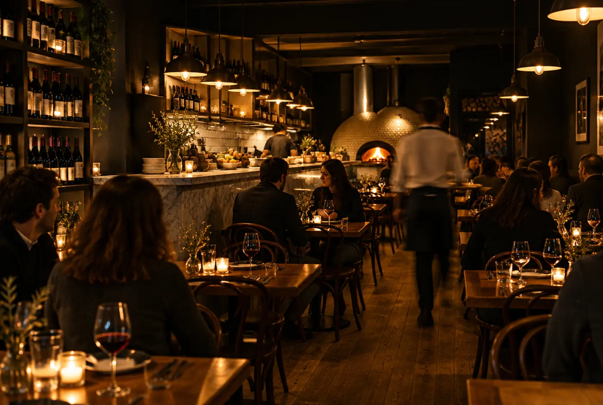

Wjeżdża
do pieca
Ciasto odpoczywało dobę. Na wierzchu mozzarella fior di latte, sos z południowych pomidorów, salami. Przewijaj — od tej chwili liczy się każda sekunda.
485
stopni
Kamień rozgrzany do czerwoności, drewno pali się z boku. Rant napina się i łapie pierwszy kolor.
Leopardatura
Ciemne plamy na brzegu nie są przypadkiem ani przypaleniem. To znak, że ciasto weszło do pieca odpowiednio wyrośnięte i wyszło w odpowiedniej chwili.
Gotowe.
60 sekund.
Brzeg pełen powietrza, ser rozpuszczony, spód suchy. Tyle dzieli kulę ciasta od kolacji.
w piecu 485 °C
piec na drewno
Doba, minuta i kwadrans z hakiem
Ciasto odpoczywa u nas dobę. Dzięki temu jest lekkie, chrupiące na zewnątrz i miękkie w środku — i nie leży ciężko po kolacji.

485 stopni, kamień i ogień z boku. Minuta — dłużej znaczyłoby spalone, krócej znaczyłoby surowe.

Tyle zwykle zajmuje dowóz w promieniu trzech kilometrów od Katowickiej. W piątkowy wieczór bywa dłużej — wtedy piszemy o tym przy zamówieniu.
Ile masz czasu?
Zamawiasz na dowóz
Zamów przez system online albo zadzwoń. Kierowca rusza, gdy pizza wychodzi z pieca — nie wcześniej.
Siadasz u nas
Godzina to dokładnie tyle, ile trzeba na przystawkę, pizzę prosto z pieca i kawę. Stolik rezerwujemy telefonicznie — odbieramy w godzinach otwarcia.
Odbierasz osobiście
Katowicka 48, kilka kroków od centrum. Zamów online z odbiorem własnym albo zadzwoń — powiemy, o której czekać.
Odbiór osobisty nie ma minimalnej kwoty zamówienia.
Katowicka 48,
Opole

- Telefon510 265 267
- E-mailpizzeriaposzlozdymem@gmail.com
- Adresul. Katowicka 48, Opole
- Instagram@poszlozdymem